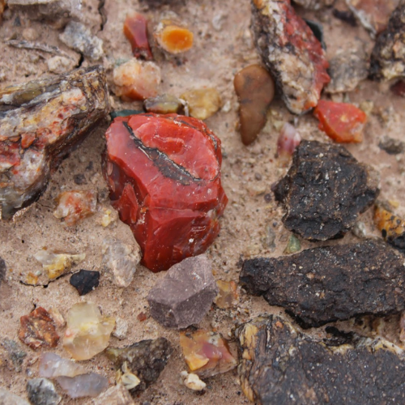
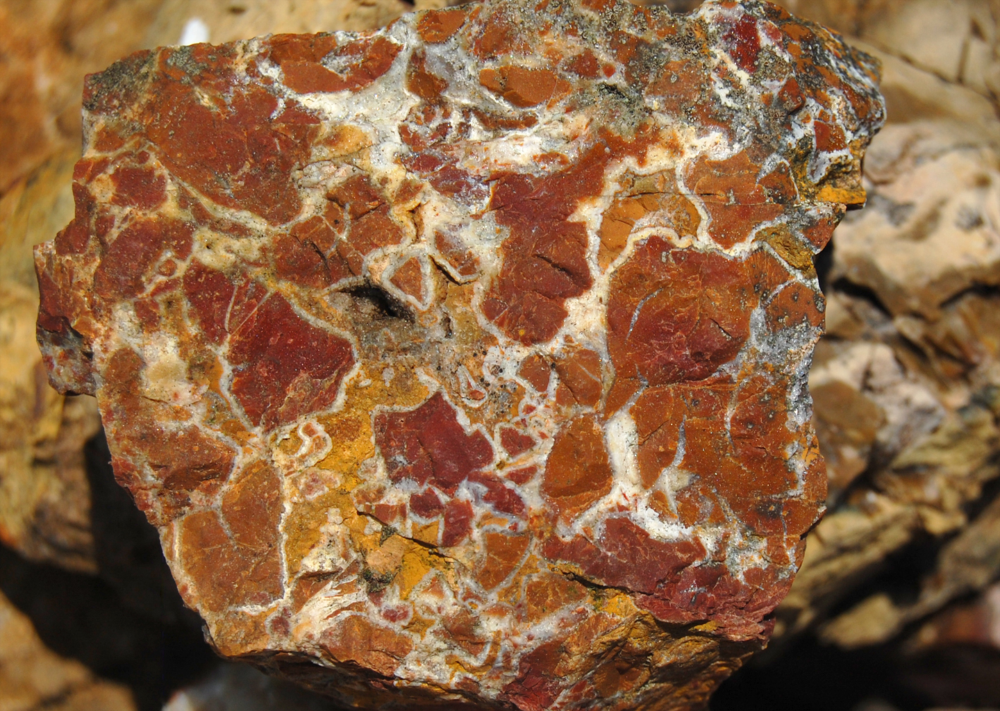
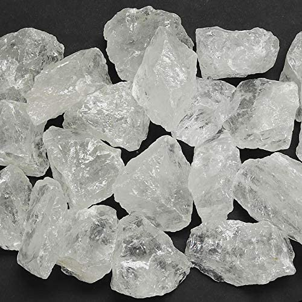
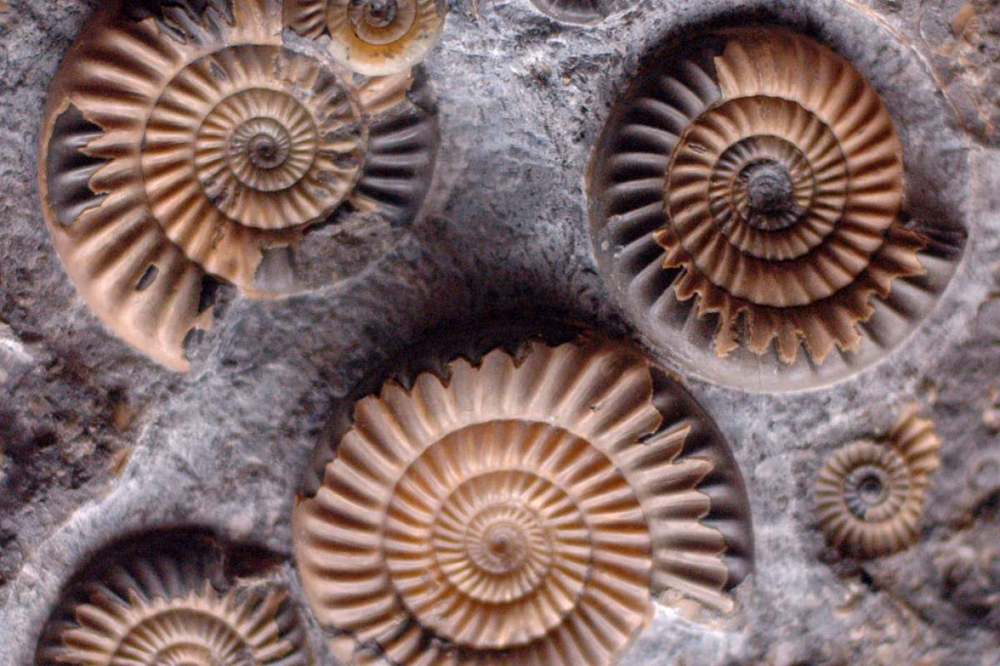
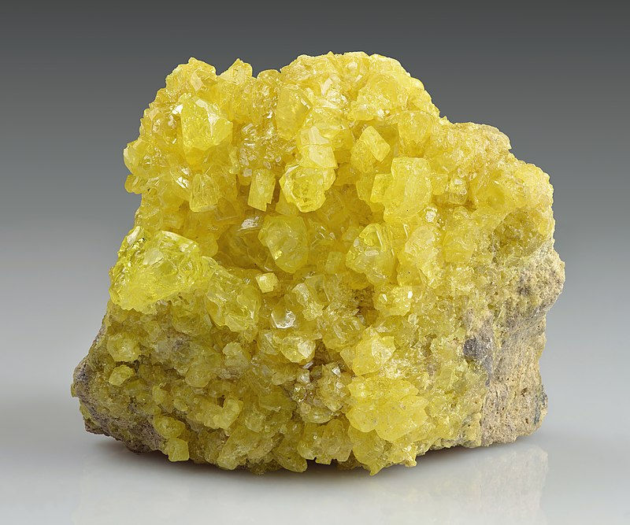

New here?

New to rockhounding and don't know where to start? Not to worry, we will show you the ropes. Click below to head over to our "Getting Started" guide
Getting StartedRocks & Minerals In Mississippi


Mississippi rockhounding maps to hunt for crystals, gemstones, minerals, and ores. Mississippi offers a variety of rockhounding experiences, with its rich fossil history and mineral deposits. Collectors can explore the gravel bars of the Mississippi River for petrified wood and agates, or visit the Iuka area for its world-famous Tishomingo Minerals.
Sponsored Dig Site

Own a digsite you would like to advertize in Mississippi? Contact us for more information about being our sponsor of the month! Email sponsors@rockhounding.org for more information.
Dig With UsPlease always bring appropriate attire and do research before venturing out to rock hunt and crystal hunt. Also, be sure to verify that the location you want to hunt at is available for public access. Rockhounding.org does our best to verify, but it is your responsibility to verify as well because sometimes things change. We are not liable for any actions you take from the information you find on this site.
Keeping accurate records of Rockhounding & Gemstone Hunting Locations is a community effort! Know of a good spot that is missing from our maps? Feel free to submit it below. Thank you for your contributions to the rockhounding community!
Popular Rocks, Crystals, & Gemstones In Mississippi
-

Agate
Agate, a form of chalcedony, can be found in various locations throughout Mississippi, primarily in gravel deposits and near riverbanks.
Read More -
 Fluorite
FluoriteFluorite, a mineral used in various industrial applications, has been found in Mississippi, particularly in the northern part of the state.
Read More -

Jasper
Jasper, a form of chalcedony, can be found in Mississippi, especially in the northern part of the state and along riverbanks.
Read More -

Quartz
Quartz crystals can be found in various locations throughout Mississippi, particularly in the igneous and metamorphic rocks of the state.
Read More -

Fossil Shells
Fossil shells from ancient marine life are common in Mississippi's sedimentary rock formations, particularly in the northeastern part of the state.
Read More -
 Barite
BariteBarite, a mineral used in various industrial applications, has been found in Mississippi, particularly in the southwestern part of the state.
Read More -

Sulfur
Sulfur, a yellow element used in various industries, can be found in Mississippi, particularly in areas with volcanic or hydrothermal activity.
Read More -
 Azurite
AzuriteAzurite, a blue copper mineral, has been found in Mississippi, particularly in the southwestern part of the state.
Read More
-
 Gravel Bars in Mississippi River
Gravel Bars in Mississippi RiverGravel bars along the Mississippi River are known for yielding a variety of agates, jasper, and petrified wood.
Read More -
St. Catherine Creek National Wildlife Refuge
Located in southwestern Mississippi, this refuge is home to a variety of fossils, including shark teeth and marine invertebrates from the Eocene Epoch.
Read More -
Iuka Agate Beds
In northeastern Mississippi, the Iuka Agate Beds are known for producing beautiful agate specimens, often with colorful banding.
Read More -
Chunky River
The Chunky River in eastern Mississippi is a popular spot for finding petrified wood, as well as a variety of marine fossils, such as coral and shells.
Read More -
Crystal Springs
Located in central Mississippi, Crystal Springs is known for its quartz crystal deposits, which can be found along the creek beds and in the soil.
Read More -
Red Bluff Formation
Red Bluff Formation in southeastern Mississippi offers a unique opportunity to find trace fossils, such as worm burrows and shrimp tunnels, in the reddish clay.
Read More
Geology of Mississippi
Mississippi's geology is characterized by a relatively flat landscape underlain by sedimentary rocks, which were formed in shallow seas, deltas, and coastal environments over millions of years. The state's geological history spans from the Paleozoic to the Cenozoic era, with rock formations primarily consisting of limestone, sandstone, and shale.
The Mississippi River has played a significant role in shaping the state's geology, depositing rich alluvial soils and creating extensive gravel bars. This has resulted in the presence of a wide range of fossils, as well as petrified wood and various minerals.
Mississippi's coastal plain region, which extends across the southern part of the state, is home to a wealth of marine fossils, offering insights into the state's ancient marine environments. Mississippi's diverse geology provides ample opportunities for rockhounding, from searching for fossils along the banks of the Mississippi River to uncovering petrified wood in the state's gravel deposits.